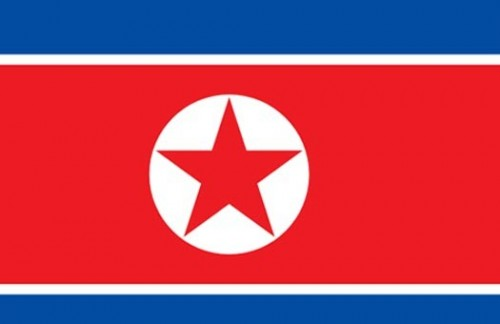
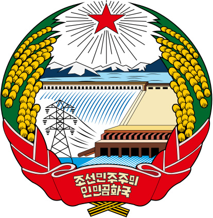
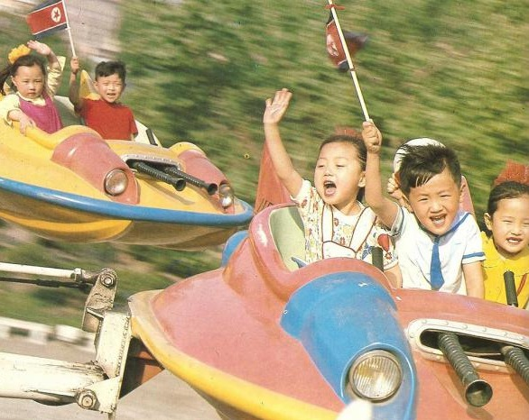

Північна Корея
Коре́йська Наро́дно-Демократи́чна Респу́бліка (КНДР; кор. 조선민주주의인민공화국, 朝鮮民主主義人民共和國, чосон мінджуджуий інмін конхваґук), неофіційно відома як Півні́чна Коре́я (кор. 북조선, пук чосон) — країна в Східній Азії. Розташована у північній частині Корейського півострова. Межує на півночі з Китаєм та Росією, а на півдні Південною Кореєю. На сході омивається Східним морем (Японським морем), на заході — Жовтим морем. Столиця — Пхеньян.
Ця країна має найбільш ізольовану та проблематичну економіку, що планується верхівкою, тобто Трудовою партією Кореї. Погодні умови, брак палива та техніки для цивільного вжитку, брак капіталовкладень у галузі промисловості окрім воєнної мають негативні наслідки для економіки Північної Кореї. З середини 90-х років країна офіційно визнала існування голоду. Світовим благодійним організаціям був відкритий доступ до раніше закритої країни задля допомоги голодуючим.
За офіційними даними північно-корейської сторони у 1995 року від голоду загинули 220 тисяч жителів, за іншими неофіційними підрахунками число померлих наближається до 2-х мільйонів. Проте, за оцінками аналітиків з Peterson Institute for International Economics об'єм торгового обігу між Північною Кореєю і КНР у I кварталі 2012 р. досяг рекордного значення — $1, 4 млрд. На цьому фоні, згідно з попередніми оцінками, «в північнокорейській економіці збереглося позитивне сальдо платіжного балансу».

Iндустріальна зона міста Хамхин
Валовий внутрішній продукт у 2002 році складався з таких основних секторів: сільське господарство 30 %, промисловість 34 %, послуги 36 %.
2005 рік продемонстрував такий розподіл робочих місць: сільське господарство 36 %, промисловість та послуги 36 %.
Основні галузі промисловості країни: воєнна, машинобудівна, електровиробна, хімічна, гірнича промисловість (видобуток залізної руди, вугілля, графіту, магнезиту, цинку, міді, свинцю, дорогоцінних металів), металургія, текстильна, харчова, туристична.
У 2004 році країна експортувала мінерали, металургійну продукцію, вироби різного вжитку, зброю та боєприпаси, текстиль, риболовне приладдя.
Партнерами з експорту у 2004 року були: Китай — 45,6 %, Південна Корея — 20,2 %, Японія — 12,9 %.
Того ж року статтями імпорту були паливо, вугілля, машини та механізми, текстиль, зернові.
Основні партнери з імпорту на 2004 рік: КНР — 32,9 %, Таїланд — 10,7 %, Японія — 4,8 %.
Туризм та візовий режим
Група корейських туристів. Позаду — Кимсусанський меморіальний палац.
Через політичну ізоляцію туризм не дуже розвинений, проте громадянам інших країн в'їзд не забороняється. У КНДР туристів приваблює неосталінська атмосфера, будівлі і просто комуністичний спосіб життя. Приїжджають сюди здебільшого китайці, для яких, до речі, працюють спеціальні казино (КНР забороняє у себе казино, крім Макао) і молодь з пострадянських країн, яка хоче відчути життя у СРСР. Китайців також приваблюють дешеві, порівняно з китайськими, товари.
Корейцям є чим здивувати туристів: від специфічного корейського вбрання до не менш специфічної корейської кухні. Для туристів спеціально виготовляють три сорти горілки: тростинна, женьшенева і, найдорожча, зі змією.
Гірськолижний курорт біля міста Вонсан
Якщо до країни хоче потрапити громадянин Південної Кореї, йому потрібно отримати дозвіл від посольств і Північної, і Південної Кореї (для громадян інших держав потрібний лише дозвіл посольства КНДР).
Бували випадки затримання американських туристів з метою отримання поступок за їхнє звільнення в ході візитів американських високопосадовців. Так у 2016 році американського студента Отто Вормбіра, який приїхав до країни як турист, було заарештовано і засуджено на 15 років трудових таборів за крадіжку політичного плакату в пхеньянському готелі «Янгакто».
З часів СРСР діяла угода з Північною Кореєю щодо взаємних поїздок громадян, яку було пролонговано, тому громадянам України візи отримувати було не потрібно. 26 червня 2016 року Кабінет міністрів України розірвав угоду з Північною Кореєю щодо взаємних поїздок громадян. Основною причиною такого рішення став той факт, що Корейська Народно-Демократична Республіка не визнає суверенітет та територіальну цілісність України, оскільки уряд КНДР підтримав незаконну окупацію території Криму військами Російської Федерації. Відповідна заява була зроблена наприкінці 2014 року директором департаменту друку та інформації МЗС КНДР Чжон Дон Хаком.
Наразі, в'їзд в Північну Корею Громадянам України дозволяється тільки в складі офіційно організованих груп, тому візи також оформляються тільки на групу.